Multi-Colour Distance Fields*
* or Multi-Color Distance Fields, depending on your region!
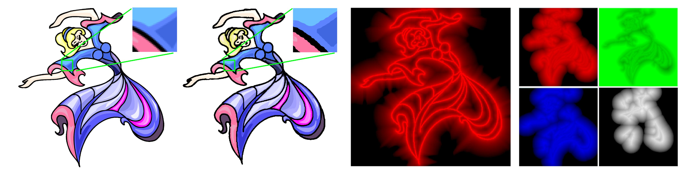
From left to right: a) the original input image (512x512), b) the output render using RelSDF+RegSDF (256x256 fields), c) visualization of RelSDF, and d) visualization of RegSDF.
Abstract
Distance field rendering is an effective technique to render low resolution vector-like raster assets with sharp detail. In 2D, this technique is commonly used to render simplified mono-colour elements such as text or glyphs alongside 3D objects. We extend signed distance fields for improved rendering of crisp outlines and rendering interior multi-colour regions. Outlines are rendered through a nonlinear distance metric that prevents detail loss during downsampling. Interior regions are represented through a fixed number of four distance field channels, plus four channels to store colour indices, inspired by the four-colour mapping problem. Our method enables cartoon-like sprites, images, and icons to be rendered at high quality with reduced storage and memory requirements for real-time rendering.
Our Method - Relative Signed Distance Field (RelSDF)
A mono-channel SDF. We modified the distance metric to account for both the boundary of shapes and the centre of shapes.
This required mapping distance to an exponential curve instead of a linear curve, to fit 3 points (let n be the new distance value stored in the field, and f be the true distance value):
- n = 1.0 when f => 0
- n = 0.5 when f => shape thickness
- n = 0.0 when f => +∞
Intended for thin details such as outlines, this allows renders at different cutoff values (beyond just 0.5) to accurately depict relative thickness between shapes, and also better retain these thin details when downsampling to lower resolutions.
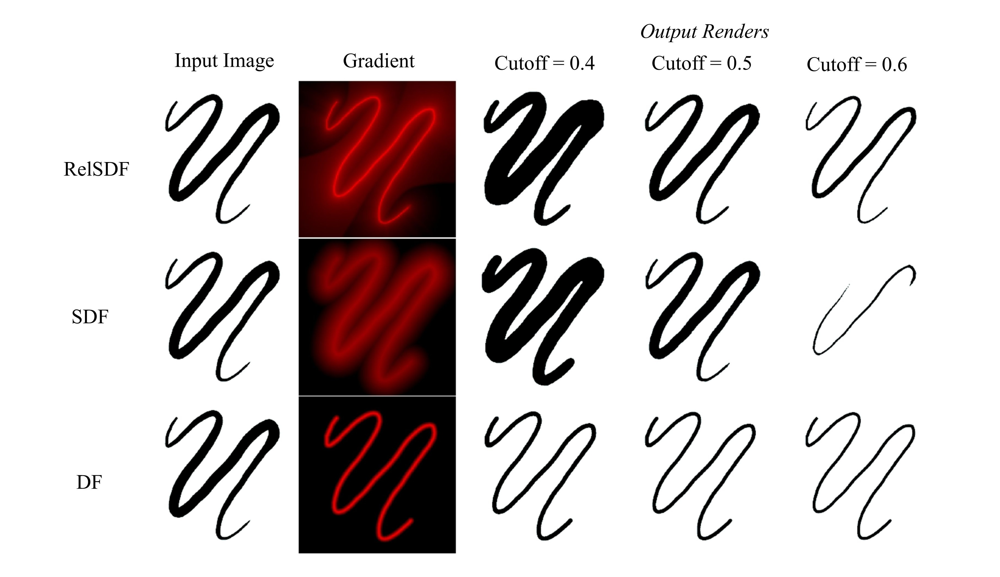
Comparisons of RelSDF, SDF and DF for a line with varying thickness. Input image 512x512, output renders from fields of 128x128.
Our Method - Regional Signed Distance Field (RegSDF)
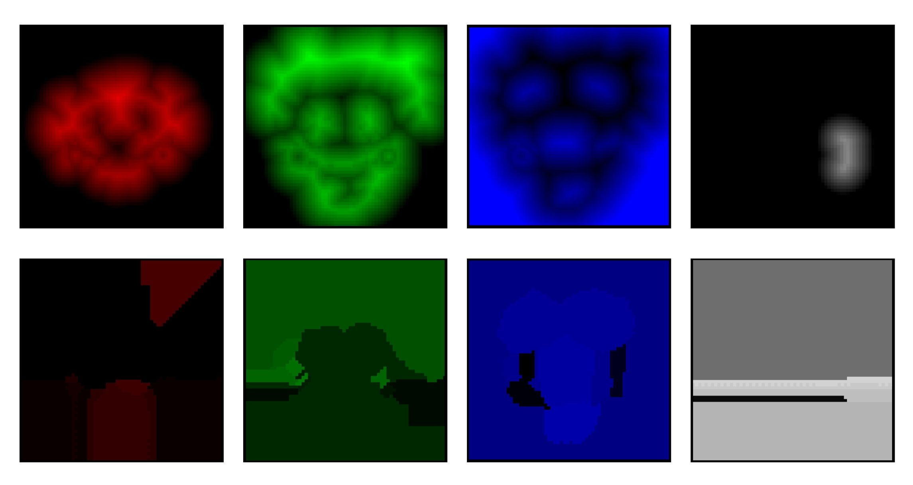
A multi-channel SDF (4 fields + 4 rasters that index to a colour Look-Up Table (LUT)). Assumes input image has regions of colour that are larger than 1 pixel (e.g. cartoons).
Inspired by the Four-Colour Mapping Problem, we propose that 4 overlapping SDFs can represent all coloured regions, such that every region (and their boundaries) is clearly defined with the resulting gradients.
This renders all regions within a image, but does not say what colour to render each region as: we use 4 additional rasters of the same resolution as the fields to point each texel to an index in a LUT.
Together, this enables vector-like rendering of generalized images in raster-based rendering pipelines (e.g. Unity3D, Unreal Engine).
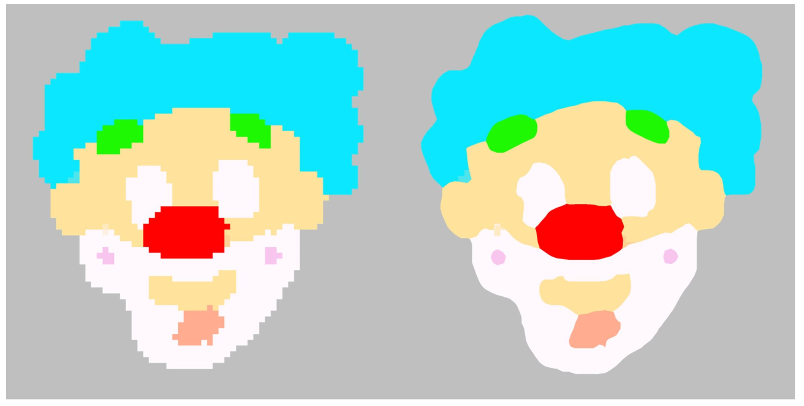
Comparisons of original input image and RegSDF render, both from 64x64 fields.
Example image renders
(dependent on parameter tuning and quality of colour-extraction method;
results are better when there aren't faded edges between colours in the original image).
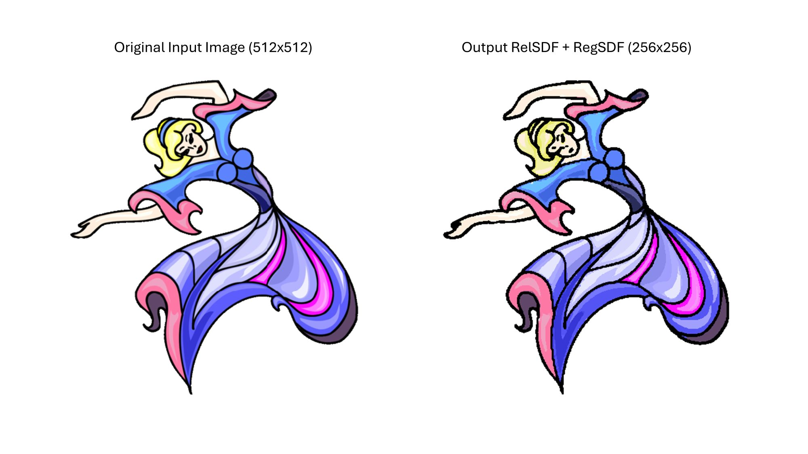
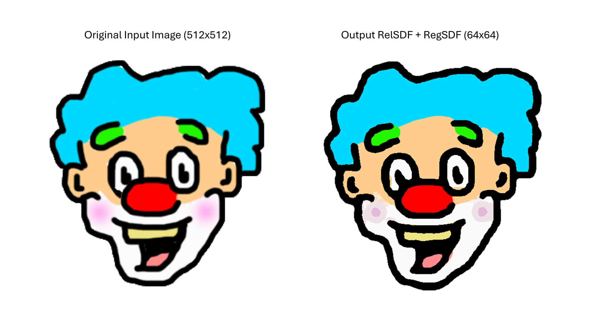
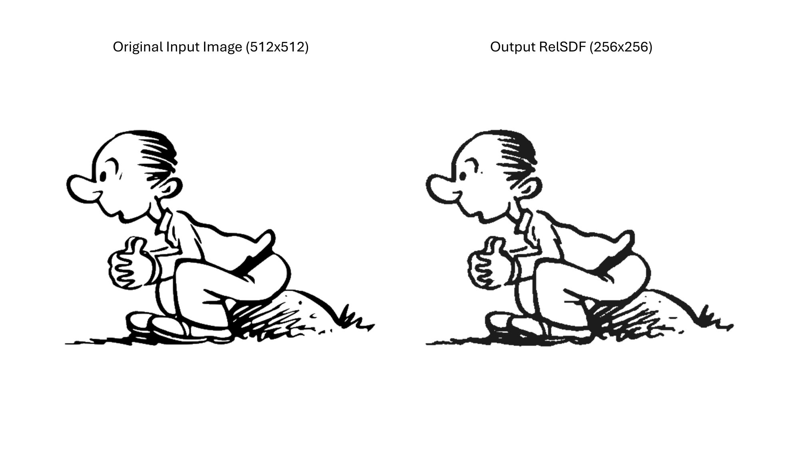
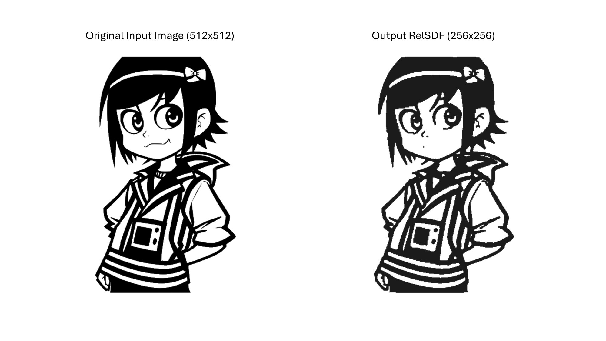
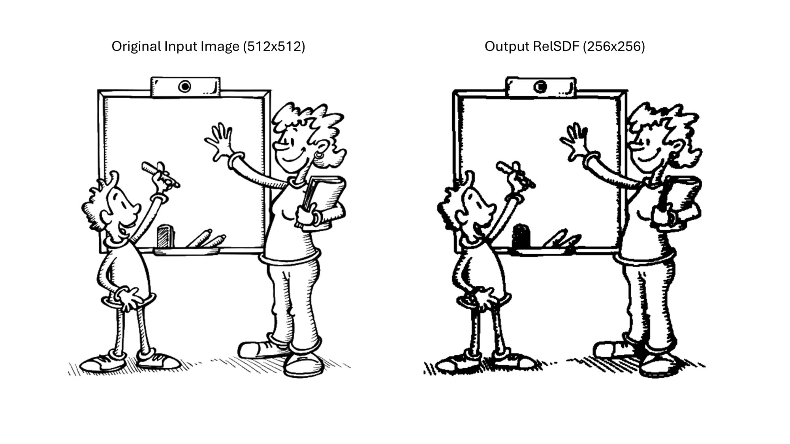
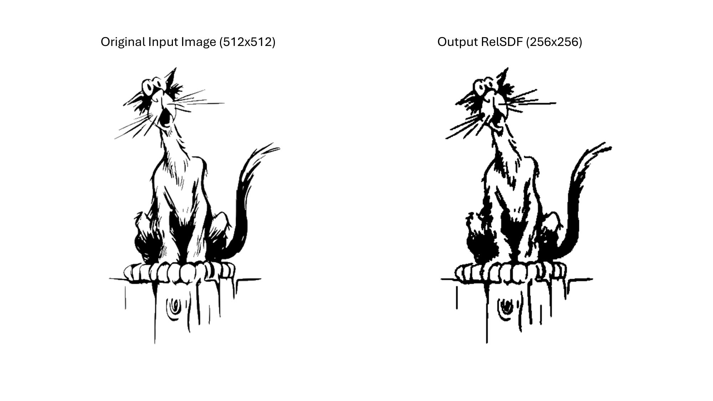
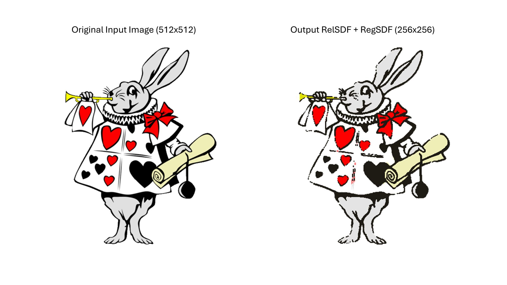
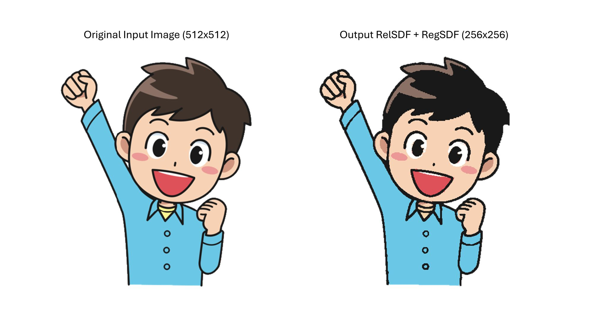
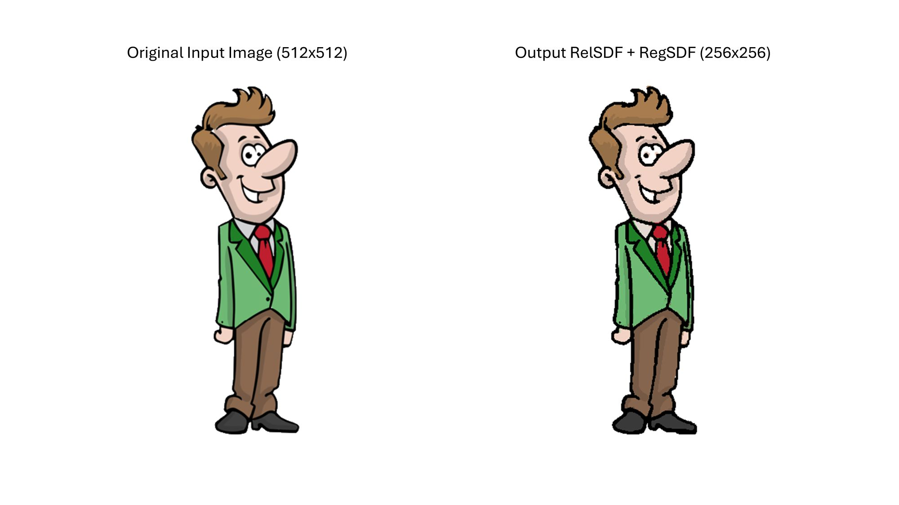
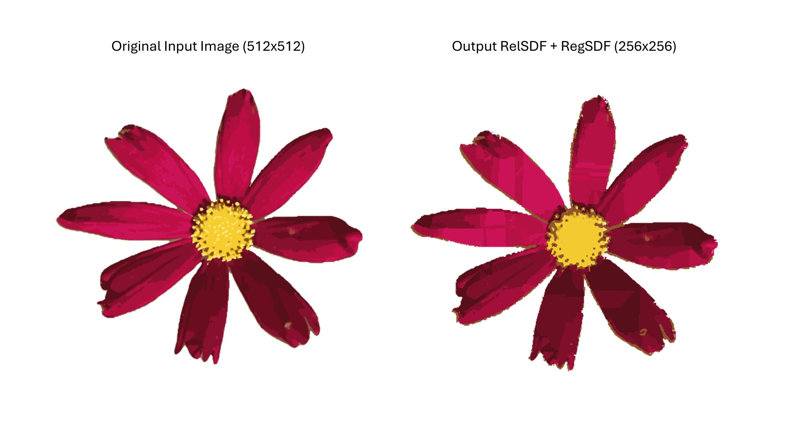
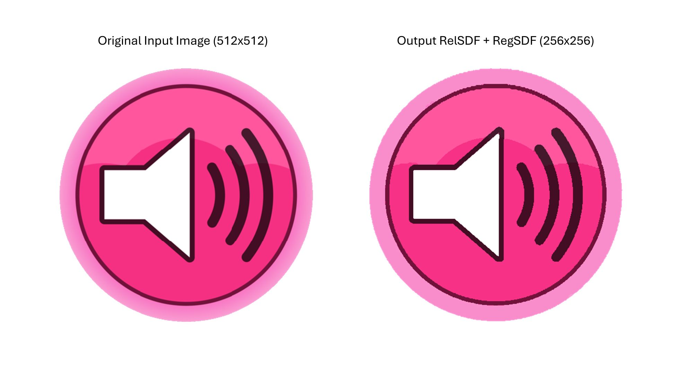
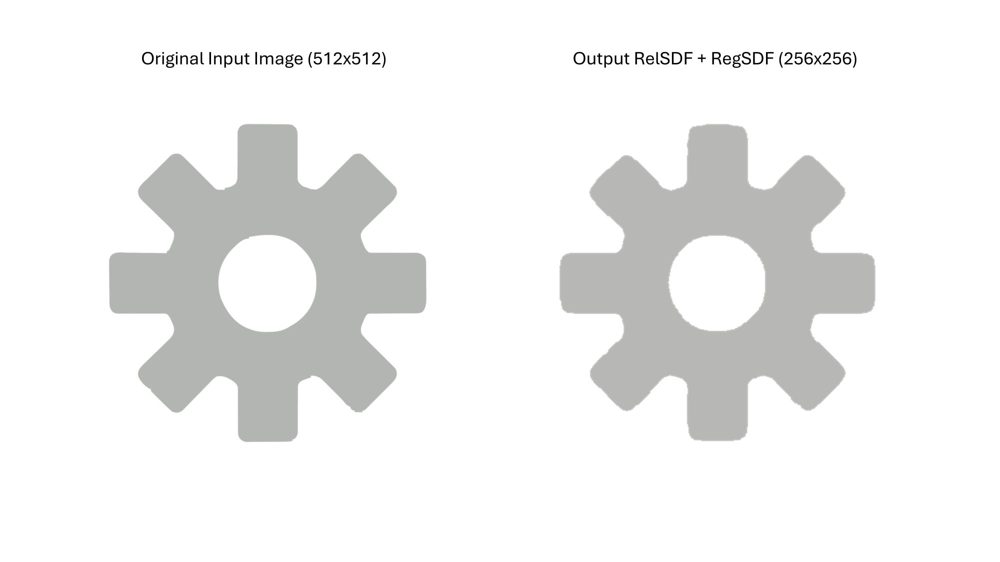
Video Presentation
TO BE ADDED LATER.
BibTeX
@article{hlynka2026multi,
title={Multi-Colour Distance Fields},
author={Hlynka, Andrew W. and Mould, David},
journal={Proceedings of the 52nd Graphics Interface Conference 2026},
year={2026}
}